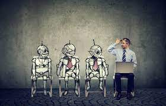
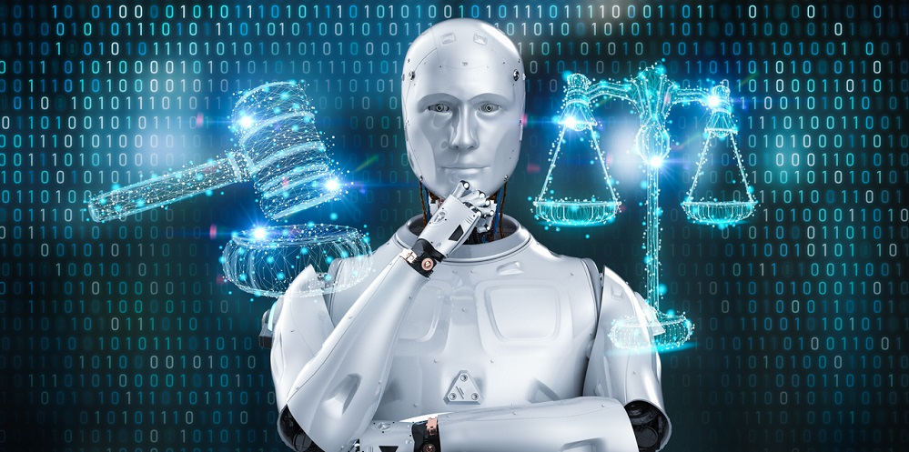
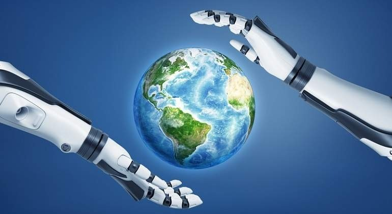

Introducción - ¿Cómo la Inteligencia Artificial impacta al mundo?
La Inteligencia Artificial es una herramienta extremadamente útil e innovadora que fue inventada en el pasado siglo. Sin embargo, las desventajas de la Inteligencia Artificial son mayores a las ventajas porque estas abarcan consecuencias terribles a largo plazo, tales como la pérdida de empleos debido a la automatización hasta preocupaciones éticas sobre sesgos y discriminación en las decisiones algorítmicas. Además, la falta de empatía emocional en las máquinas y los retos de privacidad y seguridad de los datos son cuestiones importantes que acompañan el avance de la IA.Algunas voces creen que la Inteligencia Artificial (IA) tiene riesgos. Sobre todo si se explora el potencial de la IA y no se limita solamente a reproducir tareas humanas. Autores como Stephen Hawking o Bill Gates y distintos investigadores han expresado su preocupación por la IA.

Desventajas de la Inteligencia Artificial que todo el mundo debería conocer
DESEMPLEO:
La automatización y la inteligencia artificial generan inquietud por su impacto en el empleo y el aumento del desempleo. Se cuestiona qué ocupaciones serán reemplazadas por máquinas. Pronósticos divergentes indican que entre 75 y 375 millones de trabajadores (3-14% de la población activa global) necesitarán cambiar de profesión para 2030. La falta de acuerdo entre expertos tecnológicos y empresariales crea incertidumbre. La transición hacia la automatización presenta desafíos, especialmente en empleos de baja calificación. La robótica e IA reducen oportunidades en sectores menos especializados, acentuando la polarización salarial y el desempleo. La inseguridad económica históricamente debilita la confianza en instituciones políticas, potencialmente aumentando el apoyo a movimientos populistas y la desconfianza hacia democracias liberales.
Además, la transformación tecnológica no solo plantea preocupaciones económicas, sino también éticas y sociales. El uso de algoritmos y sistemas de IA en procesos de toma de decisiones, como la selección de candidatos para empleo o la concesión de préstamos, puede dar lugar a sesgos y discriminación inadvertida. La opacidad en el funcionamiento interno de estos sistemas dificulta la rendición de cuentas y la identificación de posibles injusticias. A medida que confiamos más en las máquinas para tareas cruciales, surge la necesidad de establecer marcos reguladores sólidos que aborden estos problemas y garanticen la equidad y la transparencia en un mundo cada vez más automatizado.
FALTA DE TRANSPARENCIA:
La inteligencia artificial puede tener fallos en distintas áreas, subrayando la necesidad de transparencia. Los datos de entrenamiento pueden contener errores o sesgos inadvertidos. La dificultad de detectar y entender malfunciones, junto con algoritmos de aprendizaje automático inexplicables o secretos, complica la situación. Esto impacta en áreas como el sistema judicial de EE. UU., donde el uso de algoritmos para evaluar riesgos puede amenazar los derechos individuales debido a la falta de supervisión y transparencia. El ejemplo de Eric Loomis ilustra cómo la falta de claridad en las decisiones algorítmicas puede influir en el sistema legal.
Además de los desafíos económicos y éticos, la cuestión de la responsabilidad también se vuelve crucial en el contexto de la inteligencia artificial. A medida que las máquinas toman decisiones autónomas en una variedad de ámbitos, surge la pregunta de quién es responsable cuando algo sale mal. Los problemas de responsabilidad pueden ser especialmente complejos cuando se trata de sistemas de IA que operan en entornos dinámicos y cambiantes. ¿Debería ser el fabricante de la IA, el desarrollador del algoritmo, el operador del sistema o alguna combinación de ellos el responsable en caso de un error catastrófico? Resolver estas cuestiones no solo es esencial para proteger los derechos y la seguridad de las personas, sino que también es fundamental para establecer un marco legal y ético sólido que guíe el desarrollo y la implementación futura de la inteligencia artificial.

ALGORITMOS SESGADOS Y DISCRIMINATORIOS:
Al seguir con los algoritmos, las inteligencias artificiales pueden ser entrenadas negativamente. Pueden ser utilizadas para elaborar trabajos con datos malos y modificatos por personas bizarras, implementando racismo y clasismo. Los algoritmos discriminatorios pueden ser muy comunes cuando se le pregunta a la Inteligencia Artificial temas sensibles para la sociedad.
Es cierto que la influencia negativa de los algoritmos y la inteligencia artificial en la sociedad es una preocupación importante. La capacidad de estas tecnologías para amplificar y perpetuar prejuicios y estereotipos existentes es un problema que no debe subestimarse. La IA puede reflejar y ampliar los sesgos inherentes en los datos de entrenamiento, lo que lleva a resultados discriminatorios y perjudiciales en áreas como la contratación, el crédito y la justicia. Esto no solo socava la equidad y la justicia, sino que también crea un ciclo de retroalimentación negativa al incorporar y perpetuar prejuicios en sistemas automatizados. Abordar estos problemas requiere una evaluación constante, una mejora de los datos de entrenamiento y algoritmos, así como un compromiso consciente para evitar la discriminación en la programación y la implementación de la inteligencia artificial.
LA CREACIÓN DE PERFILES:
Las Inteligencias Artificiales pueden ser utilizadas para crear perfiles falsos para engañar a personas. Además, recopilan tus datos y pueden predecir aspectos como tu localización. Tu voz puede ser utilizada por la Inteligencia Artificial durante secuestros, causando mejores estafas y mayores pérdidas de dinero. La creación de cuentas falsas en redes sociales también es un problema serio debido a que las personas pueden crear multicuentas o "bots" inteligentes para favorecer a cierto influencer, haciéndolo ganar vistas y comentarios de manera ilegítima.
La proliferación de perfiles falsos y el uso malintencionado de la inteligencia artificial plantean amenazas significativas a la privacidad y la seguridad en línea. La capacidad de las IA para recopilar, analizar y predecir datos personales con precisión crea oportunidades para la suplantación de identidad, el robo de información sensible y la manipulación psicológica. La voz y la imagen generadas por IA pueden ser empleadas en ataques de ingeniería social y extorsión, erosionando aún más la confianza en la autenticidad de la información en línea. La detección y mitigación de estas amenazas requiere una combinación de tecnologías de seguridad avanzadas y una mayor conciencia pública sobre los riesgos asociados con la manipulación de la IA. Además, las plataformas en línea deben trabajar activamente para identificar y eliminar perfiles falsos y comportamientos engañosos, salvaguardando así la integridad de sus comunidades virtuales.
IMPACTO MEDIOAMBIENTAL:
La IA puede tener beneficios ambientales, como redes inteligentes y ciudades de bajas emisiones. Sin embargo, su alto consumo de energía la hace dañina; entrenar un modelo emite 300.000 kg de CO2, igual a 125 vuelos Nueva York-Pekín o 5 veces las emisiones de un coche promedio en vida útil. La infraestructura de IA, como centros de datos, también causa emisiones al construirse y operarse.Además de los desafíos y preocupaciones mencionados anteriormente, la inteligencia artificial también presenta una paradoja ambiental. Aunque puede ser un impulsor de soluciones sostenibles, como redes eléctricas inteligentes y estrategias urbanas de bajas emisiones, su propio impacto ambiental no debe pasarse por alto. A pesar de los posibles beneficios, la IA consume una cantidad significativa de energía en su funcionamiento y entrenamiento. La huella de carbono de entrenar un solo modelo de IA es comparable a la de cientos de vuelos internacionales o múltiples vehículos a lo largo de su vida útil. La infraestructura requerida para mantener la IA, como los centros de datos, también contribuye a las emisiones de gases de efecto invernadero tanto durante su construcción como en su funcionamiento continuo.

Consecuencias negativas de la IA
Explicación
Desempleo
Aproximadamente más del 80% de la población y 1 de cada 3 trabajos será reemplazado por robots operando Inteligencia Artificial.
Falta de profesionales calificados
Al tener todo al alcance de un click, se estima que la mayoría de los universitarios están utilizando ChatGpt u otros softwares lo cual puede perjudicarlos al trabajar.
Privacidad vulnerable
El uso indiscriminado de IA puede comprometer la privacidad y la seguridad de los datos personales.
Armas Autónomas
El desarrollo de armas con IA autónoma plantea preocupaciones éticas y riesgos de escalada en conflictos.
Sesgo Amplificado
La IA puede perpetuar y ampliar sesgos existentes en los datos, resultando en decisiones discriminatorias.
A pesar de los notables avances y las ventajas que ofrece la inteligencia artificial (IA), es esencial reconocer y abordar las desventajas y preocupaciones asociadas con su implementación. Una de las principales inquietudes radica en la pérdida de empleos y la alteración de la fuerza laboral. A medida que la IA automatiza tareas y procesos, algunos empleos pueden volverse obsoletos, lo que plantea desafíos económicos y sociales, como la reubicación laboral y la necesidad de reentrenamiento. Además, existe el riesgo de que la IA refuerce desigualdades preexistentes, ya que su implementación podría favorecer a empresas con mayores recursos y capacidades para adaptarse a estas tecnologías.
Otro aspecto crítico es la privacidad y seguridad de los datos. La recopilación masiva de información para alimentar algoritmos de IA plantea riesgos de violación de la privacidad y uso indebido de datos personales. Las preocupaciones sobre el acceso no autorizado y el manejo inadecuado de datos son legítimas y requieren un marco ético y legal robusto para garantizar que los datos se utilicen de manera responsable y protegida.
Además, la opacidad de los algoritmos utilizados en la IA es una inquietud significativa. Muchos modelos de IA, como las redes neuronales, son complejos y difíciles de comprender completamente. Esta falta de transparencia dificulta la explicación de las decisiones tomadas por la IA, lo que puede generar desconfianza y limitar su adopción en áreas críticas como la atención médica y el sistema judicial.
En términos más amplios, también surge la preocupación sobre la dependencia excesiva de la IA en la toma de decisiones clave en la sociedad. La confianza ciega en la tecnología podría llevar a una pérdida de habilidades humanas esenciales, como el pensamiento crítico y la empatía. La coexistencia armoniosa y equilibrada entre la IA y las capacidades humanas es un desafío crucial que debemos abordar para garantizar un futuro sostenible.
En reflexión, es fundamental abordar estas desventajas y preocupaciones de manera proactiva y ética. La IA debe ser un medio para mejorar la calidad de vida y la sociedad en su conjunto, no para generar desigualdades o socavar derechos fundamentales. La colaboración interdisciplinaria, que incluya a expertos en tecnología, ética, reguladores y la sociedad en general, es esencial para guiar el desarrollo y la implementación de la IA de manera responsable y garantizar que sus beneficios superen ampliamente sus desafíos. La clave radica en lograr un equilibrio adecuado entre la innovación tecnológica y la consideración ética, asegurando que la IA contribuya a un futuro más justo y equitativo para todos.